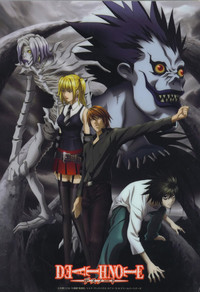

Death Note
Light Yagami is a 17 year old genius who cares nothing about the world around him. He has gotten tired of everything until he finds a notebook labeled "Death Note" one day. Upon reading the book, he finds that it has the ability to kill anyone's name that is entered into it. Thinking it is a joke, he stores it way; however, his curiosity gets the better of him and Light soon finds out that the book is real. With this new found knowledge, Light begins his quest to conquer the world and become the god of the world.